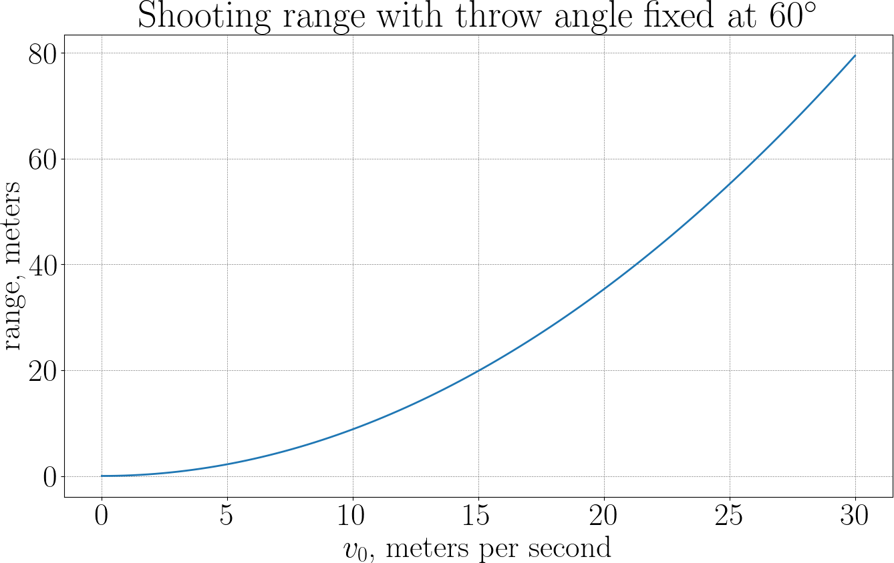

The Ape Hits a Target
Up to this point, the simulation has been used to predict what happens given a throw. In this chapter, the direction is reversed: the throw itself becomes the unknown. The question is simple to state:
— If the throw angle is fixed, which launch angle makes the banana hit a target at the ground?
While the problem has an analytical solution, the idea is to find the answer entirely from numerical simulation. This way, we can check the closed-form solution to assess our results.
A target is painted on the ground, at a known horizontal position \(x^*\). The throw angle is fixed, and the only thing the ape is willing to adjust is the initial speed. Every failed throw costs a banana. The ape wants to spend as few bananas as possible.
One parameter, one event, one constraint.
In the previous chapter, the ape learned how to simulate the motion of a banana using a time-stepping scheme and how to detect the moment when the banana hits the ground. This required careful handling of two distinct ingredients:
- A numerical integration scheme (explicit Euler)
- An event detection mechanism to stop the simulation at the correct physical time.
We now revisit this procedure from a different point of view.
At first sight, the simulation seems to produce a trajectory: \((x(t),y(t)),t \geq 0\).
However, this is not what we ultimately need.
In the present problem, the ape is not interested in the entire flight of the banana. Only one number matters, namely, the horizontal position of the banana when it hits the ground. Let us call it \(x_\text{impact}\).
This observation allows us to radically simplify our description of the numerical procedure. Since the gravitational acceleration, the launch angle, the initial position and the time step \(\Delta t\) are fixed, the only remaining free parameter is the initial speed \(v_0\). The numerical procedure is fully determined, so
This entire procedure defines a mapping: $$ F:v_0\to x_\text{impact} $$
We call \(F\) the forward map.
It is essential to understand what the forward map is — and what it is not.
FF is not a closed-form formula.
FF is not evaluated analytically.
FF is produced by a numerical algorithm.
Yet, from the outside, it behaves exactly like an ordinary function:
One input
One output
Always the same output for the same input
From now on, we will treat the simulator as a function.
1.5 Black-box viewpoint
In scientific computing, it is often neither possible nor useful to inspect the internal structure of a simulation code.
We therefore adopt the following rule:
The forward map FF is a black box.
This means:
We can evaluate F(v0)F(v0).
We can evaluate it again for another value of v0v0.
We do not assume any explicit formula for FF.
This viewpoint is not a simplification — it is a realistic model of how numerical solvers are used in practice. 1.6 Determinism and reproducibility
Because all numerical choices are fixed, the forward map has an important property:
Determinism
Running the simulation twice with the same v0v0 produces exactly the same ximpactximpact.
This is what allows us to reason about FF as a mathematical object, even though it is generated numerically. 1.7 Smoothness: an empirical observation
At this stage, we do not assume anything about the regularity of FF.
However, numerical experiments reveal that:
Small changes in v0v0 lead to small changes in ximpactximpact.
The map appears smooth.
This observation will become important later, but for now it remains empirical. 1.8 Cost of evaluating the forward map
Each evaluation of FF requires:
A full time integration
Event detection
Interpolation
In the ape’s world, this cost is easy to measure:
One evaluation of FF consumes exactly one banana.
From this point onward, numerical algorithms will be judged not only by correctness, but also by banana efficiency. 1.9 Why this abstraction matters
This section marks a conceptual turning point.
We no longer think in terms of:
Positions
Velocities
Time steps
Instead, we think in terms of:
Inputs
Outputs
Numerical cost
This shift allows us to formulate the ape’s task in a new way:
Given a function FF, find an input such that its output satisfies a constraint.
This is the foundation of inverse problems, optimization, and parameter identification.
